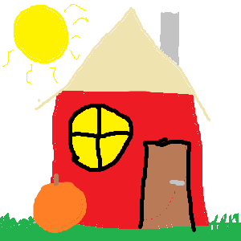

Lehel on kasutad map area käsud
palun kliki hiirega erineva alale pildil

Kõrvits
Kõrvits ehk harilik kõrvits (Cucurbita pepo) on kõrvitsaliste sugukonna kõrvitsa perekonda kuuluv üheaastane rohttaim.
Tagasi kodulehele